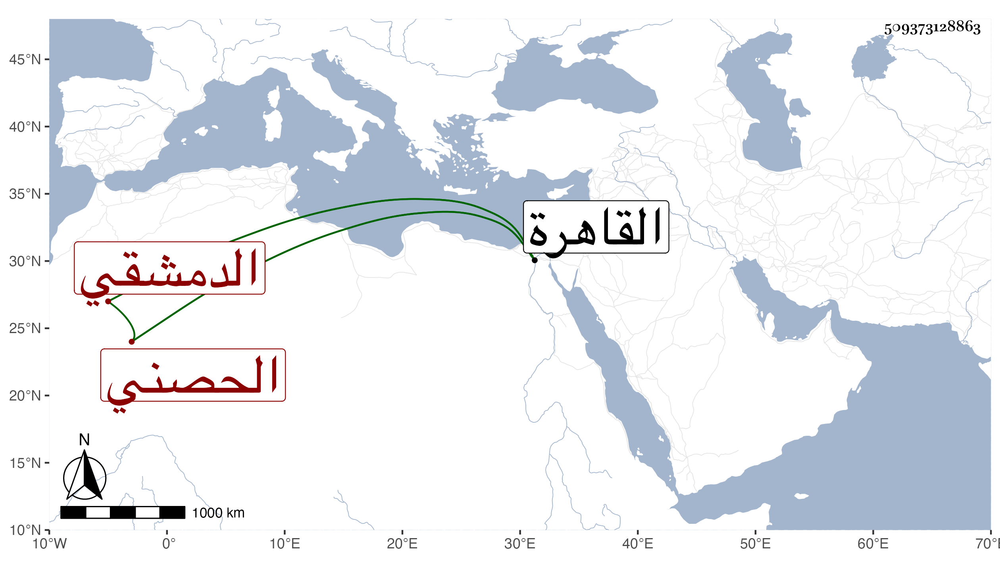

0902Sakhawi.DawLamic.ITO20230111-ara1.EIS1600.509373128863
Biography ID: 509373128863
735
محمد بن محمد بن محمد بن محمد بن عبد المؤمن السيد الشمس بن المحب بن الشمس الدمشقي الحصني الأصل الماضي أبوه حفيد أخي التقي أبي بكر الحصني الآتي في الكنى . قدم القاهرة فاشتغل كثيرا وتميز ومن شيوخه إمام الكاملية وكذا سمع مني وخلف والده في سنة تسع وثمانين في المشيخة وكثر الثناء عليه سيما في القيام بالمعروف ولذا تعدى بعضهم بشكواه بحيث طلب هو والتقي بن قاضي عجلون وقدما القاهرة في سنة أربع وتسعين وكان ما حكيته في حوادثها .
